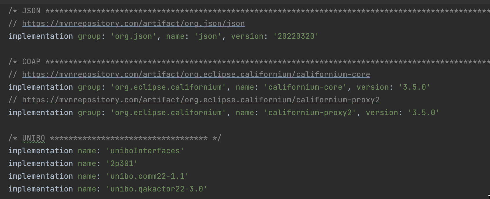

Introduction
Progetto finale di ISS finalizzato allo sviluppo software di un impianto di smistamento dei rifiuti attraverso un robot che preleva il carico del camion e lo porta al container appropriato
Requirements
Work Plan
In questo Sprint ci occuperemo della WasteServiceStatusGUI . Questa permetterà al Service-manager di:
- vedere lo stato corrente del transportTrolley e la sua posizione nella stanza
- vedere il peso corrente dei due container
- vedere lo stato corrente del Led
Problem analysis

Problem: Kind of GUI
- App Android
- Web App
- App iOS
Per quanto riguarda la Web App invece, è possibile utilizzare un browser web da qualsiasi dispositivo per accedere alla GUI, risultando quindi più versatile.
Dopo aver analizzato le varie opzioni, suggeriamo al team di sviluppo, la strada della Web App, servendosi del framework
Problem: Show Data
Data Source
Bisogna quindi comprendere quali siano le fonti di tali informazioni. In particolare, la GUI deve fornire informazioni su:-
Stato del
transportTrolley e la sua posizione nella stanza - Peso corrente dei due container
- Stato corrente del Led
Stato e posizione del transportTrolley
Dall'analisi dei requisiti è emerso che lo stato e la posizione delenum class CurrStateTrolley { IDLE, STOPPED, MOVING, PICKINGUP, DROPPINGOUT }
Inoltre, in seguito all'analisi condotta nello Sprint1, è stato deciso di mantenere questi dati utilizzando laenum class TTPosition { HOME, INDOOR, PLASTICBOX, GLASSBOX, ONTHEROAD }
Peso corrente dei due container
Dall'analisi dei requisiti è emerso che il peso corrente dei due container, può essere rappresentato tramite unaInoltre, come emerso dallo Sprint1, lo stato dei container è mantenuto nellaprivate val boxCurrentWeight : MutableMap < Material, Double >
Stato del Led
Per quanto rigurda lo stato del led, dall'analisi dei requisiti è emerso che può essere rappresentato tramite un enumerativo:Tuttavia, la sua gestione, resta una problematica ancora aperta che verrà trattata nello Sprint3. Ciò nonostante, supponiamo che lo stato del led sarà gestito allo stesso modo degli altri dati, ossia tramite il SystemStateManager. Per tale motivo, suggeriamo agli sviluppatori di apportare le modifiche necessarie, al SystemStateManager e alla data class SystemState.kt, affinchè essi siano predisposti alla gestione dello stato del led.enum class CurrStateLed { ON, OFF, BLINKING }
Alla luce di questa analisi è possibile affermare che la fonte di dati per la GUI, è rappresentata dal componente SystemStateManager.
Fetch vs Push
Una volta compreso che ilSono possibili due modalità di recupero dei dati:
Fetch
Questa soluzione prevede che sia la GUI a richiedere i dati alInoltre, affinchè non venga perso nessun dato, è necessario che questa operazione venga ripetuta ad intervalli regolari, generando un elevato overhead di rete.
Per tale motivo, sconsigliamo agli sviluppatori di adottare questo approccio.
Push
Tale soluzione prevede che laL'adozione di questa soluzione è particolarmente consigliata, in quanto permette di sfruttare la caratteristica degli attori QAk di essere realizzati come delle risorse CoAP osservabili. Procedendo in questo modo, sarà sufficente che la GUI apra una conessione CoAP con il server CoAP del
Problem: Late start of the GUI
Bisogna comprendere come, in tale circostanza, debba essere gestito l'aggiornamento dei dati mostrati dalla GUI. Infatti se la GUI dovesse essere avviata tempo dopo il WasteService, potrebbero essersi verificati dei cambiamti di stato che la GUI non mostra.
Si pone il problema di come gestire l'aggiornamento dei dati mostrati dalla GUI in caso di late start.
- Fare fetch all'avvio della GUI
- Aspettare che una richiesta scateni un
updateResources
Waiting for updateResources
Aspettare che arriva un'altra richiesta al WasteService è la soluzione più semplice da implementare, ma non è la migliore.Infatti protrebbe verificarsi il caso in cui al WasteService non arrivino richieste anche per istanti di tempo lunghi, pertanto la GUI non si aggiornerà fino a quel momento, mostrando dei dati errati.
Fetch
Per fare ciò, si potrebbe inviare alBisogna capire che tipo di messaggio inviare, un
Alla luce di ciò, consigliamo agli sviluppatori di progettare la GUI in modo che faccia Fetch dei dati all'avvio.Dispatch getdata : getdata(_)
Architettura Logica
Sulla base di quanto emerso in fase di analisi del problema è possibile ridefinire l'architettura logica del sistema.
Project
GUI
Operazioni Preliminari
Come suggerito dagli analisti, si è deciso di progettare laPer iniziare è bastato collegarsi al sito Spring.io il quale ci ha permesso di creare il progetto, scegliendone innanzitutto il tipo (Gradle o Maven), la versione di Java da utilizzare e le dipendenze necessarie da "aggiungere" al progetto come mostrato in figura. Premuto il tasto
Dopo aver scaricato il file .zip è stato necessario decomprimerlo e importarlo nel nostro IDE come progetto
Dopo di che andiamo ad aggiungere al file

Il file build.gralde dell'applicazione è consultabile al seguente link build.gradle.
Il passo successivo è stato quello di definire all'interno del file
Operazioni Preliminari
Test Plan
By students:
Name: Annamaria Simonitto, Enrico Valastro, Alessio Reitano
Email: annamaria.simonitto@studio.unibo.it, enrico.valastro@studio.unibo.it, alessio.reitano@studio.unibo.it